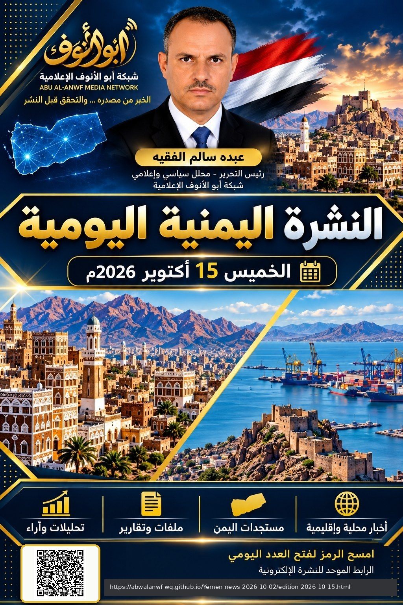

النشرة اليمنية اليومية
الخميس 15 أكتوبر 2026م
مستجدات اليمن | الشأن الإنساني | أخبار محلية وإقليمية | تحقق تحريري
شبكة أبو الأنوف الإعلامية
الخبر من مصدره… والتحقق قبل النشر
إعداد وتحرير: عبده سالم الفقيه
العدد المصوّر
الذكرى الثالثة والستون لثورة 14 أكتوبر المجيدة

حفظ النسخة المصوّرة
افتتاحية العدد
يصدر هذا العدد في الذكرى الثالثة والستين لثورة 14 أكتوبر، ويتابع أبرز التقارير المنشورة حتى تاريخ إعداد هذا العدد، مع التركيز على الشأن الإنساني وحرية وصول المدنيين إلى الغذاء والدواء والوقود والمياه، إلى جانب المستجدات المحلية والإقليمية. ولا تُعرض أي حصيلة ميدانية غير موثقة بوصفها حقيقة مستقلة.
تنبيه تحريري: تُنسب الأخبار والأرقام إلى مصادرها وتواريخ نشرها؛ ولا تُقدَّم المعلومات القديمة بوصفها حصيلة لحظية محدثة.
عاجل | عدن
تقارير عن انفجارات قرب قصر المعاشيق في عدن
تحدثت تقارير إعلامية، الخميس 15 أكتوبر 2026م، عن انفجارات في محيط قصر المعاشيق الرئاسي بمدينة عدن. وبحسب ما أوردته قناة العربية في تغطيتها المصوّرة للاستهداف، فقد استُهدف القصر بأربعة صواريخ. كما أفاد شهود عيان بسماع دوي انفجارات في المدينة؛ ولا يمكن حسم العدد النهائي للصواريخ أو الانفجارات من الصور وحدها، لذا تُنسب هذه التفاصيل إلى مصادرها. ونقلت وكالة الأنباء الألمانية عن سكان محليين سماع خمسة انفجارات ورؤية أعمدة دخان قرب القصر، فيما أفادت وكالة أسوشيتد برس، نقلًا عن شهود ومسؤولين أمنيين، بوقوع ما لا يقل عن ستة انفجارات قرب منشآت حكومية.
وتباينت التقارير الأولية بشأن عدد الصواريخ وطبيعة الأضرار؛ لذلك لا تُعتمد حصيلة نهائية قبل صدور معلومات رسمية. وذكرت تقارير إعلامية أن رئيس الوزراء وأعضاء الحكومة لم يتعرضوا لأذى.
حالة التحقق: وقوع انفجارات قرب قصر المعاشيق ورد في تقارير متعددة؛ أما العدد الدقيق للصواريخ والانفجارات وتفاصيل الأضرار فتظل منسوبة إلى مصادرها حتى صدور تحديث رسمي.
المصادر: الجزيرة · أسوشيتد برس · الشروق نقلًا عن وكالة الأنباء الألمانية
العودة إلى فهرس النشرة ↑
تطورات إقليمية | مؤتمر صحفي
التحالف يعلن حصيلة هجمات استهدفت مطارات ومنشآت سعودية
في مؤتمر صحفي عُقد في الرياض الخميس، عرض المتحدث باسم قوات التحالف، اللواء الركن تركي المالكي، معلومات عن الهجمات التي استهدفت مطار الملك خالد الدولي ومنشآت سعودية. ونقلت الجزيرة عن المتحدث قوله إن الهجمات بين 7 و11 أكتوبر أسفرت عن 17 وفاة و133 إصابة، كما أعلن التحالف تدمير 127 مخزنًا ومنصات إطلاق.
وتتناول هذه المادة تصريحات المؤتمر بشأن الهجمات على السعودية والعملية التي أعلنها التحالف، وهي منفصلة تحريريًا عن التقارير المتعلقة بانفجارات عدن؛ ولا يتوافر في المصادر المذكورة ما يثبت وجود رابط مباشر بين الحدثين.
حالة التحقق: الأرقام والتصريحات منسوبة إلى المتحدث باسم التحالف كما نقلتها وسائل إعلام؛ وهي ليست حصيلة مستقلة من إعداد الشبكة.
المصادر: الجزيرة · عكاظ · أخبار 24
العودة إلى فهرس النشرة ↑
مناسبة وطنيةاليمن يحيي الذكرى الـ63 لثورة 14 أكتوبر
تحلّ ذكرى ثورة 14 أكتوبر في عامها الثالث والستين، التي انطلقت من جبال ردفان ضد الاستعمار البريطاني في جنوب اليمن. تمثل المناسبة محطة لاستحضار التحرر الوطني، وبناء المؤسسات، وترسيخ سيادة القانون والمواطنة.
حالة التحقق: تاريخ المناسبة ثابت؛ أما تفاصيل الفعاليات والتصريحات فتحتاج إلى مراجعة مصادرها المنشورة وتواريخها.
العودة إلى فهرس النشرة ↑
الشأن اليمني والإنسانيتعز: تقارير عن القصف وقيود وصول الإمدادات
تظل القيود على الطرق وحركة الإمدادات في تعز قضية إنسانية تمس وصول المدنيين إلى السلع الأساسية والخدمات. وتطالب المواقف الرسمية بفتح الطرق وتيسير وصول الغذاء والدواء والوقود والمياه؛ وتُنسب المطالب والتصريحات إلى الجهات التي أصدرتها، فيما تحتاج الأرقام والتفاصيل الميدانية إلى تحقق مستقل.
حالة التحقق: يجب مراجعة تاريخ كل تقرير ومقارنته بالمصادر المحلية والإنسانية قبل إعادة نشر أي أرقام أو ادعاءات ميدانية.
العودة إلى فهرس النشرة ↑
تطورات إقليميةالتصعيد الإقليمي ومخاطر البنية التحتية
تؤثر التطورات الإقليمية على سلامة المدنيين والطيران والطاقة والملاحة. وينبغي الفصل بين الوقائع المؤكدة، والتصريحات الرسمية، والمعلومات التي لا تزال قيد التحقق، مع تجنب نسبة المسؤولية عن أي حادث دون مصدر واضح.
حالة التحقق: متابعة عامة؛ راجع المصادر الأصلية وتوقيت نشرها قبل اعتماد تفاصيل حادث بعينه.
العودة إلى فهرس النشرة ↑
ملف إنسانيمخاطر الهجرة عبر البحر الأحمر وخليج عدن
تستمر مخاطر الهجرة البحرية عبر خليج عدن والبحر الأحمر، ما يجعل حماية الأرواح والاستجابة الإنسانية أولوية. وتُذكر أعداد الضحايا أو المفقودين فقط عند إسنادها إلى بيان موثوق محدد التاريخ.
حالة التحقق: لا تعتمد هذه الفقرة حصيلة نهائية لحادث محدد؛ يجب الرجوع إلى آخر بيان من المنظمة الدولية للهجرة أو الجهات المختصة.
العودة إلى فهرس النشرة ↑
ما وراء الخبر | تعز وفتح الطرق: اختبار لواجب حماية المدنيين
ما وراء الخبر
قراءة تحليلية — الخميس 15 أكتوبر 2026م
تعز بين فتح الطرق، ووصول الإمدادات، وحقوق المدنيين
إعداد وتحليل: عبده سالم الفقيه — محلل سياسي وإعلامي.
ماذا تعني القضية؟
لا تقتصر قضية الطرق المغلقة على حركة المركبات؛ فهي ترتبط بقدرة السكان على الوصول إلى العلاج والتعليم والأسواق والإمدادات الأساسية. وكلما طال تعطل الطرق، ارتفعت كلفة الحياة اليومية وتقلصت خيارات الأسر، خصوصًا الأشد ضعفًا.
ما الذي يمكن استنتاجه؟
إن المطالبة بفتح الطرق وتيسير مرور المساعدات ينبغي أن تُقاس بإجراءات ملموسة: ممرات آمنة، وضمانات لحركة المدنيين، ووصول منتظم للغذاء والدواء والوقود والمياه، ومعلومات علنية عن التنفيذ. وهذه قراءة تحليلية للآثار المحتملة وليست ادعاءً بأن كل إجراء قد نُفّذ.
ما الذي يجب التحقق منه؟
ينبغي الفصل بين نصوص البيانات الرسمية، وتقارير المنظمات الإنسانية، وما يمكن التثبت منه ميدانيًا. ولا تُنسب أرقام أو مسؤوليات عن حوادث محددة دون مصدر مباشر واضح وتاريخ نشر.
الخلاصة: المعيار ليس قوة التصريحات وحدها، بل أثرها على حياة المدنيين وقدرتهم على التنقل والحصول على الخدمات الأساسية.
العودة إلى فهرس النشرة ↑
أرشيف الأعداد السابقة
روابط الأرشيف أدناه نسبية إلى جذر الموقع، حتى تعمل على GitHub Pages دون الحاجة إلى اسم نطاق إضافي.
حُفظ عدد الأربعاء في ملف مستقل، وأضيف عدد الخميس الحالي إلى الأرشيف. لم تُنشأ روابط لأعداد أخرى ما لم تتوفر ملفاتها الفعلية.
العودة إلى الصفحة الرئيسية
![رمز QR يفتح عدد الخميس 15 أكتوبر 2026 مباشرة]()